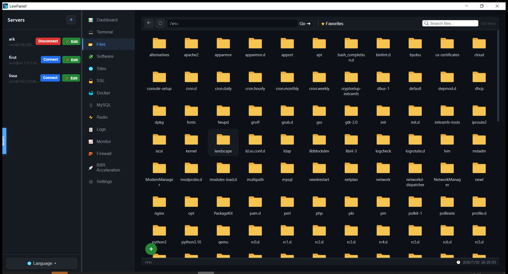
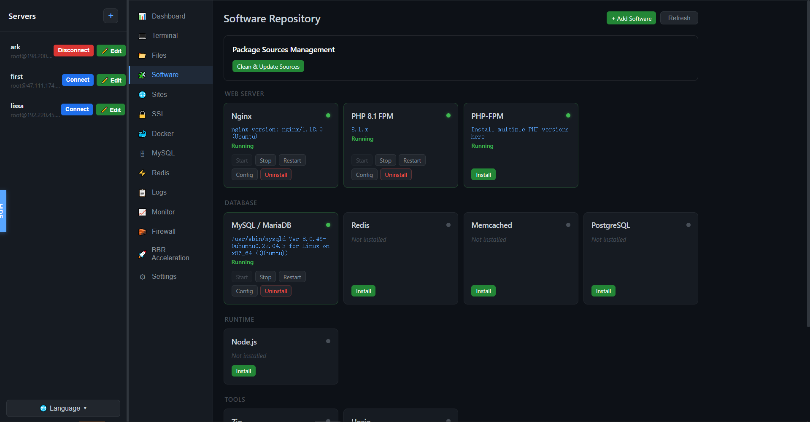
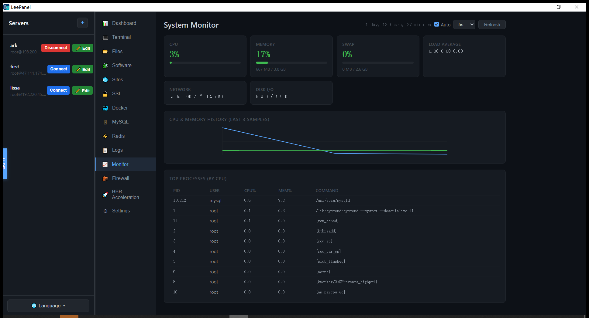

SSH 优先架构
每个操作都是从你电脑发出的一条 SSH 命令。会话彼此独立——一台服务器慢，绝不拖累其他服务器。支持密码与密钥认证、自动重连，内置完整的 xterm.js 终端。
$ ssh root@203.0.113.7 → 会话 #2 已建立
免费开源 · MIT 协议 · v1.0
如今的面板大多直接装在服务器上——这本身就多出一个攻击面，让运维的人防不胜防。 LeePanel 反其道而行：它运行在你的电脑里，用你本来就在用的方式和服务器对话： SSH。服务器上不装哪怕一行面板代码。
// 产品一览
文件、服务、数据库、容器、证书——那些你原本要 SSH 登录、手敲命令才能管的东西，如今全部以原生界面呈现。



// 功能特性
每个操作都是从你电脑发出的一条 SSH 命令。会话彼此独立——一台服务器慢，绝不拖累其他服务器。支持密码与密钥认证、自动重连，内置完整的 xterm.js 终端。
$ ssh root@203.0.113.7 → 会话 #2 已建立
基于 SFTP 的远程文件浏览：拖拽上传、大文件分片传输、压缩解压、chmod 权限、批量操作与收藏夹。
Nginx、MySQL/MariaDB、多版本 PHP-FPM。安装、启动、停止、重启、重载——带实时状态指示灯。
Nginx 虚拟主机、Let's Encrypt 证书、支持 WebSocket 的反向代理、防盗链、伪静态规则、按站点切换 PHP 版本。
MySQL/MariaDB 增删改查、用户权限、备份恢复；Redis 键值跨 DB0–15 浏览、TTL 编辑与备份。
容器生命周期管理、镜像拉取、日志查看、镜像源配置——不再需要 Portainer。
CPU、内存、Swap、网络、磁盘 I/O、进程列表——按你设定的间隔持续推送。
可视化管理 ufw / firewalld / iptables 规则，一键开关 BBR 拥塞控制，安全重启服务器。
// 为什么不一样
填好主机、端口、密码或密钥。凭据只保存在你电脑本地的 SQLite 里——绝不写到服务器上。
LeePanel 为每台服务器建立独立会话。没有 agent、没有守护进程、不新开端口，也没有面板 CVE 等你打补丁。
文件、服务、站点、数据库、容器——以真正的原生界面呈现，而不是手敲命令。
// 技术底座